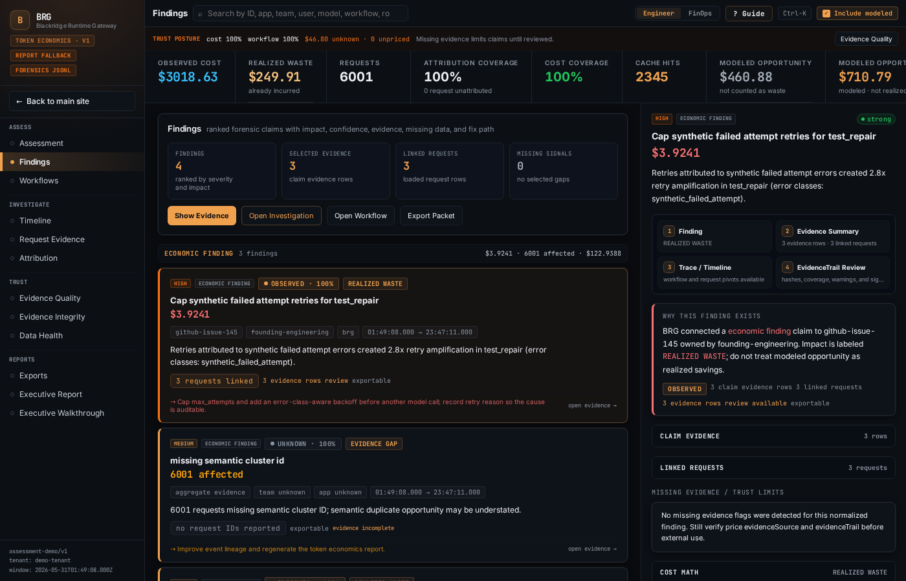

One Retry Loop Cost Us $14,000
Retry amplification is a diagnosable waste class where a failed step triggers progressively more expensive attempts. It hides because dashboards show token growth without connecting it to retry behavior and root cause.
A tool integration returned a malformed response. It did not crash. The API replied. The payload was just wrong enough to confuse the workflow. The AI agent did what agents do: it retried.
The retry path got more expensive
Baseline request cost.
Larger model plus bloated context.
Repeated across the endpoint.
Long enough to become a real line item.
Inference spend tied to one fixable response issue.
First retry: same call, same result.
Second retry: the agent reformulated the request, expanded the context window, and tried again.
Third retry: it escalated to a larger model because the smaller model appeared to be stuck.
Fourth retry: it tried a different tool and retrieved more context to work around the gap.
Four retries. Each one more expensive than the last.
The original call cost $0.12. The fourth cost $4.80 because it used a larger model with a bloated context window full of workaround material.
That pattern repeated across every invocation that hit the same endpoint.
Two hundred times a day.
Five weeks before anyone noticed.
$14,000 in inference spend.
Root cause: a malformed tool response that a small engineering fix would have resolved.
Why retry amplification hides
This is retry amplification.
Retry amplification happens when a workflow retries a failed step and the retry path gets more expensive than the original failure.
The agent does not simply repeat the same call forever. It adapts. It adds context. It switches models. It tries alternate paths. Each adaptation can increase token count, model cost, or both.
From the agent's perspective, this is rational. It has a goal, a budget, and a set of available actions. More context and a stronger model can look like the safest way forward.
From the business perspective, it is an expensive response to a problem that had nothing to do with model capability.
This is why retry amplification hides.
Token usage goes up. The dashboard shows the increase.
But the dashboard does not show that the increase came from retries. It does not show that each retry was more expensive than the last. It does not connect the retry pattern to a specific tool failure.
Attribution tools can show the spend came from the coding workflow.
Correct. Still incomplete.
The coding workflow was doing what it was designed to do. The waste came from how it responded to an upstream failure.
The spend looks normal until you reconstruct the execution path and classify the behavior.
What a useful finding shows
- The original failure: which tool, which endpoint, what error, when it started.
- The retry chain: how many attempts, what changed on each attempt, and how cost escalated.
- The cost impact: total spend attributable to the pattern, broken down by model, token count, and pricing basis.
- The confidence level: what evidence supports the finding and what data is missing.
- The fix: what engineering should change, the estimated savings, and how to verify the fix worked.

That is the difference between "the coding workflow is expensive" and "this workflow spent $14,000 retrying around a malformed tool response engineering can fix."
One is a cost complaint. The other is a work order.
One waste class among many
Retry amplification is one waste class. Fallback tax, context bloat, abandoned branches, retrieval duplication, and tool dead ends are others.
Each has its own pattern. Each needs evidence. Each points to a different fix.
The $14,000 figure above came from our own infrastructure — reconstructed after the fact from logs and invoices, before we had tooling that showed the cascade as it ran. That gap is what we built Blackridge to close.
Request an AI spend assessment and a founder will look for likely leak classes before anyone touches production.
Request assessment